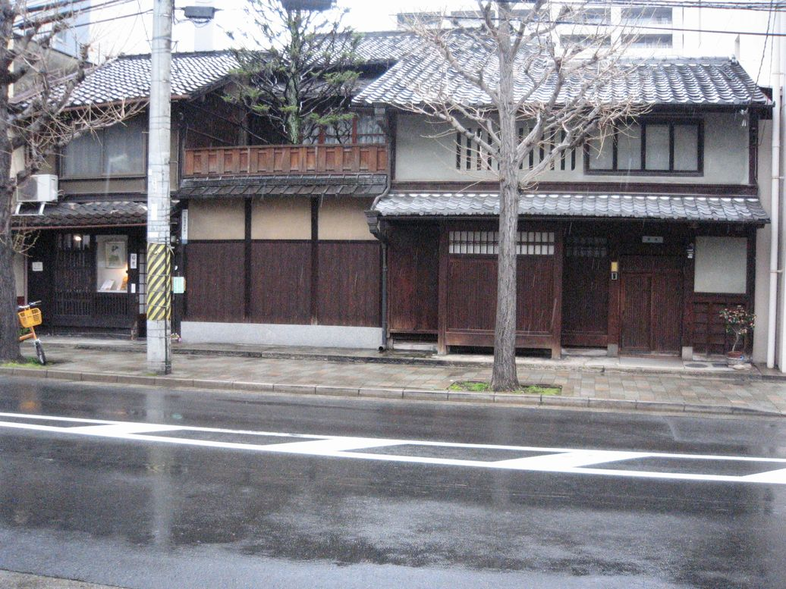

シーカーズのある二条河原町周辺は、鴨川あり、高瀬川あり、
町家カフェや骨董屋の並ぶ寺町通りも近く、お散歩に最適。
まち歩きに来てくださいね。
（ただいまお散歩マップ作成中。）
SEEKERS二条店は 京都の町の真ん中で 京都らしい町並みにあります
京都は御所を中心に町は作られました
御所の入口の前の通りは
丸太町通り→竹屋町通り→夷川通り→二条通り→
押小路通り→御池通り→姉小路通り→三条通り→
六角通り→蛸薬師通り→錦通り→四条通り→
綾小路通り→仏光寺通り→高辻通り→
松原通り→万寿寺通り→五条通り
京都の中心部 丸太町から五条までの東西の通り名を
昔 地方から丁稚奉公に来た小僧さんが わかるように
通り名の頭を歌にして 覚えました
♪まるたけ えびすに おしおいけ あねさん ろっかく たこにしき
しあや ぶったか まつまん ごじょう ♪
歌のとおり 二条店は便利な真ん中にあります
観光の方は ぎおんのようじやさん 知恩院さん前の一澤信三郎帆布店さん
お漬物の加藤順さん お茶の一保堂さん などなど いろいろたくさんの
紙袋を持って 店の前を歩いておられます ４月になって やっと 春やね
二条店の真向かいのお家は ホンマモンの町やです ぜひ 一見
